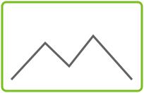

<!doctype html><html lang="zh-CN"><meta charset="utf-8"><meta name="viewport" content="width=device-width,initial-scale=1"><title>独立图标与按钮状态</title><style>body{margin:0;background:#f4f4ef;color:#20271c;font:15px/1.7 Microsoft YaHei,sans-serif}main{max-width:1080px;margin:auto;padding:28px}h1{font-size:28px}h2{font-size:21px}h3{font-size:15px;color:#66725b}a{color:#50741c}nav{margin:12px 0 24px}section{border-top:1px solid #ccd3c4;padding:24px 0}.states{display:grid;grid-template-columns:repeat(3,1fr);gap:16px}article{padding:16px;background:#fff}img{max-width:100%;height:auto}small{color:#66725b}@media(max-width:740px){.states{grid-template-columns:1fr}main{padding:18px}}.resource-grid{display:grid;grid-template-columns:repeat(2,1fr);gap:16px}.resource{display:block;padding:18px;background:#fff;text-decoration:none;color:#20271c}.resource strong{display:block;font-size:18px}.resource span{color:#66725b}.button-row{display:grid;grid-template-columns:repeat(3,minmax(0,1fr));gap:14px}.button-card{background:#fff;padding:16px}.button-card h4{font-size:14px;font-weight:400;color:#66725b;margin:0 0 12px}.button-card p{margin-bottom:0}.button-row img{width:215px;height:40px}.icons{display:grid;grid-template-columns:repeat(3,1fr);gap:16px}.icons article{background:#fff;padding:16px}.icon-preview{background:#111;height:110px;display:grid;place-items:center}.icon-preview img{max-width:90%;max-height:90px}@media(max-width:740px){.resource-grid,.icons,.button-row{grid-template-columns:1fr}}</style><main><nav><a href="../00_设计总览.html">设计总览</a>　<a href="../02_动效说明.html">动效说明</a></nav><h1>独立图标与按钮状态</h1><div class="resource-grid"><a class="resource" href="#buttons"><strong>翻页按钮三态</strong><span>上一页／下一页 · 绿／蓝主题</span></a><a class="resource" href="#icons"><strong>独立小图标</strong><span>相册、升级、主机和颜色选择</span></a><a class="resource" href="../04_光标/normal.svg"><strong>光标</strong><span>26 × 32 · 普通／指向／按下</span></a><a class="resource" href="../05_字体/"><strong>字体与授权</strong><span>DM Mono Regular／Medium、Bebas Neue</span></a></div><section id="buttons"><h2>翻页按钮三态</h2><p>215 × 40 · DM Mono Regular · 16 px</p><h3>绿色</h3><div class="button-row"><article class="button-card"><h4>上一页 · 普通</h4><p><a href="翻页按钮/previous-green-normal.svg">SVG</a> · <a href="翻页按钮/previous-green-normal.png">PNG</a></p></article><article class="button-card"><h4>上一页 · 悬停</h4><p><a href="翻页按钮/previous-green-hover.svg">SVG</a> · <a href="翻页按钮/previous-green-hover.png">PNG</a></p></article><article class="button-card"><h4>上一页 · 按下</h4><p><a href="翻页按钮/previous-green-pressed.svg">SVG</a> · <a href="翻页按钮/previous-green-pressed.png">PNG</a></p></article><article class="button-card"><h4>下一页 · 普通</h4><p><a href="翻页按钮/next-green-normal.svg">SVG</a> · <a href="翻页按钮/next-green-normal.png">PNG</a></p></article><article class="button-card"><h4>下一页 · 悬停</h4><p><a href="翻页按钮/next-green-hover.svg">SVG</a> · <a href="翻页按钮/next-green-hover.png">PNG</a></p></article><article class="button-card"><h4>下一页 · 按下</h4><p><a href="翻页按钮/next-green-pressed.svg">SVG</a> · <a href="翻页按钮/next-green-pressed.png">PNG</a></p></article></div><h3>蓝色</h3><div class="button-row"><article class="button-card"><h4>上一页 · 普通</h4><p><a href="翻页按钮/previous-blue-normal.svg">SVG</a> · <a href="翻页按钮/previous-blue-normal.png">PNG</a></p></article><article class="button-card"><h4>上一页 · 悬停</h4><p><a href="翻页按钮/previous-blue-hover.svg">SVG</a> · <a href="翻页按钮/previous-blue-hover.png">PNG</a></p></article><article class="button-card"><h4>上一页 · 按下</h4><p><a href="翻页按钮/previous-blue-pressed.svg">SVG</a> · <a href="翻页按钮/previous-blue-pressed.png">PNG</a></p></article><article class="button-card"><h4>下一页 · 普通</h4><p><a href="翻页按钮/next-blue-normal.svg">SVG</a> · <a href="翻页按钮/next-blue-normal.png">PNG</a></p></article><article class="button-card"><h4>下一页 · 悬停</h4><p><a href="翻页按钮/next-blue-hover.svg">SVG</a> · <a href="翻页按钮/next-blue-hover.png">PNG</a></p></article><article class="button-card"><h4>下一页 · 按下</h4><p><a href="翻页按钮/next-blue-pressed.svg">SVG</a> · <a href="翻页按钮/next-blue-pressed.png">PNG</a></p></article></div><p><a href="翻页按钮/index.html">查看状态、尺寸与下载</a>　<a href="翻页按钮/翻页按钮三态总稿.svg">三态矢量总稿</a></p></section><section id="icons"><h2>独立小图标</h2><div class="icons"><article><div class="icon-preview"></div><h3>相册全部为空</h3><a href="补充图标/album-all-empty.svg">SVG</a> · <a href="补充图标/album-all-empty.png">透明 PNG</a></article><article><div class="icon-preview"></div><h3>当前档位无图片</h3><a href="补充图标/album-current-empty.svg">SVG</a> · <a href="补充图标/album-current-empty.png">透明 PNG</a></article><article><div class="icon-preview"></div><h3>相册空档位</h3><a href="补充图标/album-slot-empty.svg">SVG</a> · <a href="补充图标/album-slot-empty.png">透明 PNG</a></article><article><div class="icon-preview"></div><h3>蓝色选中</h3><a href="补充图标/color-blue-selected.svg">SVG</a> · <a href="补充图标/color-blue-selected.png">透明 PNG</a></article><article><div class="icon-preview"></div><h3>蓝色选项</h3><a href="补充图标/color-blue.svg">SVG</a> · <a href="补充图标/color-blue.png">透明 PNG</a></article><article><div class="icon-preview"></div><h3>绿色选中</h3><a href="补充图标/color-green-selected.svg">SVG</a> · <a href="补充图标/color-green-selected.png">透明 PNG</a></article><article><div class="icon-preview"></div><h3>绿色选项</h3><a href="补充图标/color-green.svg">SVG</a> · <a href="补充图标/color-green.png">透明 PNG</a></article><article><div class="icon-preview"></div><h3>白色选中</h3><a href="补充图标/color-white-selected.svg">SVG</a> · <a href="补充图标/color-white-selected.png">透明 PNG</a></article><article><div class="icon-preview"></div><h3>白色选项</h3><a href="补充图标/color-white.svg">SVG</a> · <a href="补充图标/color-white.png">透明 PNG</a></article><article><div class="icon-preview"></div><h3>主机信息</h3><a href="补充图标/host-computer.svg">SVG</a> · <a href="补充图标/host-computer.png">透明 PNG</a></article><article><div class="icon-preview"></div><h3>升级失败</h3><a href="补充图标/update-failed.svg">SVG</a> · <a href="补充图标/update-failed.png">透明 PNG</a></article><article><div class="icon-preview"></div><h3>重新连接</h3><a href="补充图标/update-reconnecting.svg">SVG</a> · <a href="补充图标/update-reconnecting.png">透明 PNG</a></article><article><div class="icon-preview"></div><h3>升级成功</h3><a href="补充图标/update-success.svg">SVG</a> · <a href="补充图标/update-success.png">透明 PNG</a></article></div></section></main></html>
